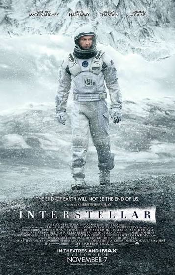
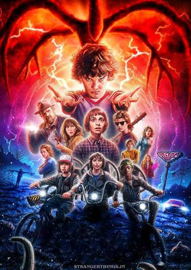
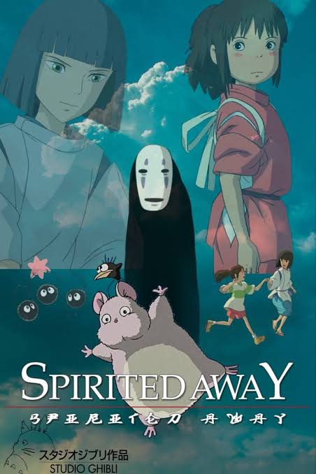

Interstellar (2014)

Informasi Film
- Tipe: Film Layar Lebar
- Sutradara: Christopher Nolan
- Genre: Sci-Fi, Petualangan, Drama
- Durasi: 169 menit
- Status Tonton: Selesai Ditonton
- Rating Pribadi: 9.5 / 10
Sinopsis
Ketika masa depan Bumi terancam oleh krisis pangan dan badai debu, sekelompok astronaut dan ilmuwan dikirim melalui lubang cacing (wormhole) di dekat Saturnus untuk mencari planet baru yang layak huni bagi kelangsungan hidup umat manusia.
Catatan & Ulasan Pribadi
Film fiksi ilmiah terbaik dengan akurasi sains dan sentuhan emosional hubungan ayah-anak yang kuat. Komposisi musik Hans Zimmer menyempurnakan suasana ruang angkasa yang megah sekaligus mencekam.
Tontonan Lain di Watchlist

